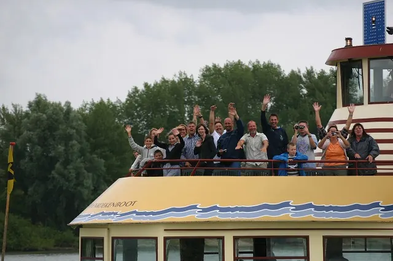
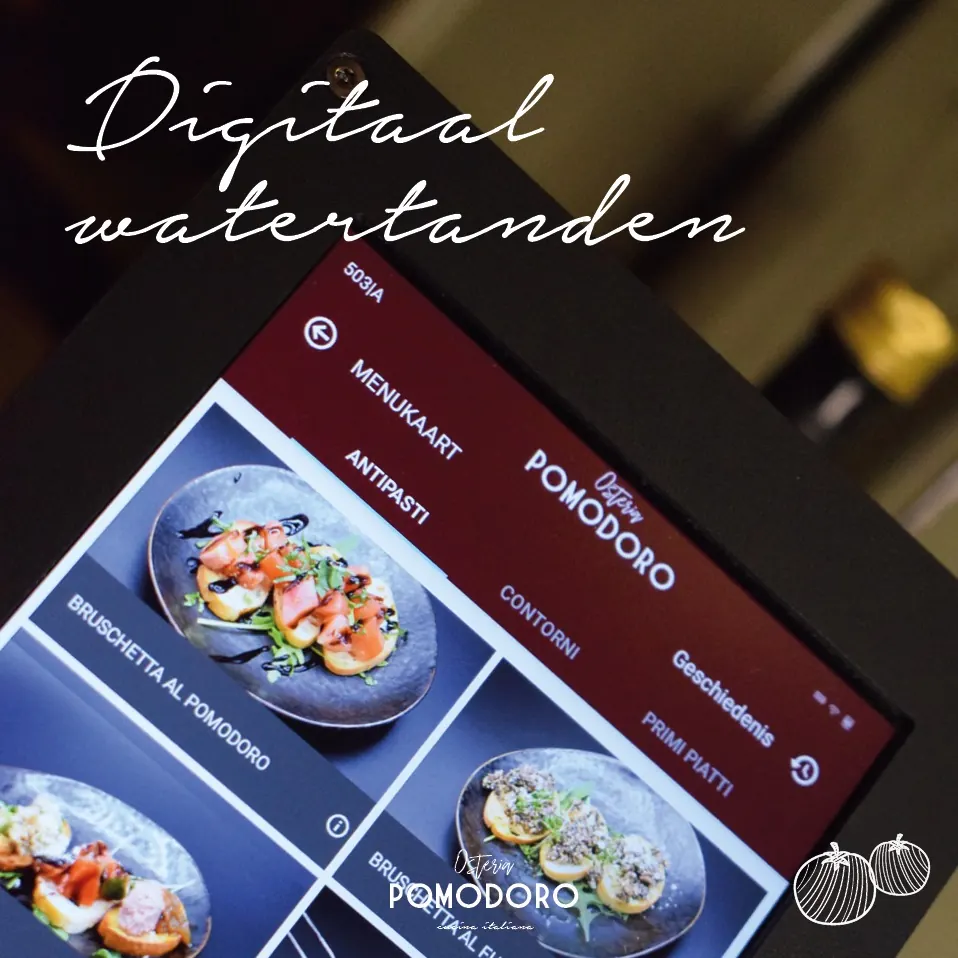
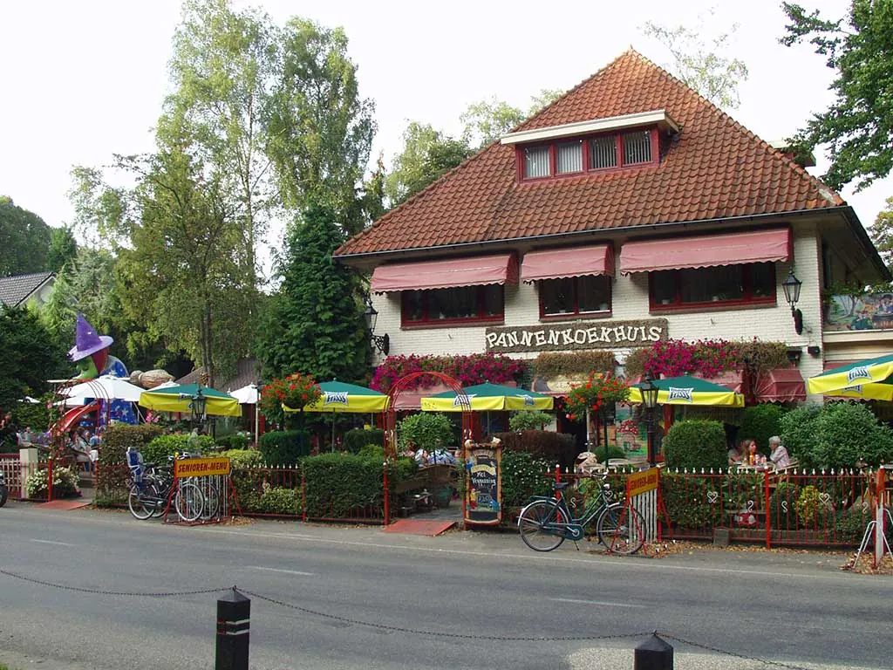
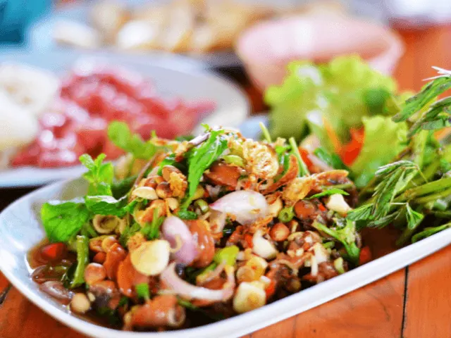

Uit eten met kinderen in Nijmegen? Deze locaties mag je niet missen
Gepubliceerd op 4 februari 2023, bijgewerkt op 20 oktober 2023
Onderdeel van de gids Restaurants in Nijmegen

Wil je binnenkort heerlijk gaan eten met kleine kinderen in Nijmegen? Dan ervaar je misschien wel keuzestress. Kleine kinderen kunnen namelijk niet erg lang stil zitten en dit is funest wanneer je lang wilt tafelen in een restaurant. Gelukkig zijn er in Nijmegen een heleboel opties te vinden zodat je kunt genieten van een kindvriendelijk restaurant, waar jong en oud volop geniet. Wanneer de kinderen zich vermaken, dan heb je natuurlijk als ouders ook al snel een geweldige avond. Maak je dus vooral geen zorgen. Wij hebben speciaal voor jou (en de kinderen) een aantal leuke opties op een rijtje gezet.
1 – De Pannenkoekenboot in Nijmegen
Wil je genieten van een bijzonder etentje met de kinderen? Dan is de Pannenkoekenboot in Nijmegen een echte aanrader. Wanneer je aan kinderen vraagt wat hun lievelingseten is, dan is de kans groot dat je pannenkoeken als antwoord krijgt. Als je tegen de kinderen vertelt dat ze heerlijk pannenkoeken mogen gaan eten in de avond, dan gaan ze waarschijnlijk uit hun dak. Als je de kinderen ook nog vertelt dat ze dit kunnen gaan eten op een boot, dan barst het feest helemaal los. De Pannenkoekenboot is daarom inmiddels ook een heus uitstapje geworden voor gezinnen en families.
Reuze versiertafel
Wanneer je een bezoek brengt aan de Pannenkoekenboot in Nijmegen, dan mag je 75 minuten onbeperkt pannenkoeken eten tijdens een rondvaart. Op de Pannenkoekenboot is een reuze-versiertafel aanwezig, waar de kinderen de mooiste pannenkoekenpretjes kunnen samenstellen. Het maakt hierbij niet uit of je wilt genieten van een zoete pannenkoek, een hartige pannenkoek, een roze pannenkoek of een witte pannenkoek. Je kunt de mooiste creaties maken van je pannenkoeken, waardoor het bijna zonde is om het op te eten.
Ontelbaar veel gekleurde ballen
Ondanks dat kinderen dol zijn op het versieren van pannenkoeken, zullen ze na een tijdje ook genoeg hebben van deze activiteit. Daarom zijn er ook allerlei leuke activiteiten te beleven op de pannenkoekenboot. De boot beschikt over een lading van 15.000 gekleurde ballen waar de kinderen heerlijk in kunnen spelen terwijl de ouders nog genieten van de pannenkoeken. Houden ze niet van de ballenbak? Dan zijn er ook voldoende kleurplaten met kleurtjes aanwezig. Hierdoor kunnen de kinderen zich ook aan tafel vermaken. Hebben jullie genoten van een heerlijke maaltijd? Dan kun je nog even uitwaaien op het dek van de boot.
Veiligheid staat voorop
Wanneer je met de kinderen aan boord gaat van de Pannenkoekenboot, dan is veiligheid natuurlijk het allerbelangrijkste. Om de kindveiligheid te vergroten zijn er geen lage relingen of gevaarlijke openingen op de boot te vinden. Daarnaast is er vrijwel altijd toezicht aan boord en zal het personeel een extra oogje in het zeil houden. Hierdoor kun je samen met de kinderen genieten van de lekkerste pannenkoeken op een heel erg bijzondere manier.

2 – Osteria Pomodoro in Lent
Het is misschien niet direct in Nijmegen, maar wel direct bij Nijmegen: Restaurant Osteria Pomodoro in Lent. Dit is namelijk een echt kinderrestaurant die we niet willen overslaan. Het restaurant staat in Nijmegen en omgeving bekend als de ‘place to be’ wanneer je wilt uit eten met kinderen. In restaurant Osteria Pomodoro in Lent mogen kinderen alles kiezen van de kaart. Hebben de kinderen zin in spaghetti met gehaktballen, een lekkere pizza of een lekker soepje? Alles is mogelijk voor de kinderen.
Ook tieners zijn welkom
Niet alleen tijdens het eten staan de kinderen centraal in het restaurant. Bij Osteria Pomodoro kunnen kinderen namelijk ook al hun energie kwijt in de geweldige speelhoek. Aan de oudere kinderen is ook gedacht in het restaurant. De tieners kunnen namelijk lekker chillen en relaxen in de loungehoek van het restaurant. De loungehoek is voorzien van gratis wifi, wat natuurlijk het walhalla is voor de gemiddelde tiener.
Heerlijk eten met de hele familie
Het restaurant leent zich ook perfect voor etentjes met de gehele familie. Terwijl de volwassenen lekker met elkaar tafelen, kunnen de kleinste kinderen genieten in de speelhoek van het restaurant. Daarnaast zijn de kinderen vaak dol op de kindvriendelijke service die het restaurant te bieden heeft. In de weekenden is er zelfs een oppas aanwezig in de speelhoek van het restaurant. Hierdoor kun je samen met je gezelschap nog langer tafelen, zonder dat de kinderen zich een moment vervelen.
Profiteer van deze voordelen
Natuurlijk is niet alleen de kindvriendelijke service belangrijk als je op zoek bent naar een restaurant. Het eten is namelijk minstens zo belangrijk, het eten is namelijk de allereerste reden dat je uit eten gaat. Bij restaurant Osteria Pomodoro in Lent kun je genieten van de allerlekkerste Italiaanse gerechten. Deze worden bereid met speciale geïmporteerde Italiaanse gerechten. Zowel de volwassenen als de kinderen zullen hun vingers aflikken tijdens een bezoek aan het restaurant. Bij het restaurant kun je ook gebruikmaken van drie erg interessante voordelen:
- In het restaurant kun je ervoor kiezen om onbeperkt te eten voor een vast bedrag.
- Wanneer je een bezoek brengt in de vroege avond, dan kun je gebruikmaken van een leuke korting.
- Je kunt bij het restaurant gratis parkeren.

3 – Pannenkoekenhuis de Heksendans
Pannenkoekenhuis De Heksendans is al ruim 25 jaar een echt begrip in Nijmegen en zijn wijde omgeving. Het restaurant staat gevestigd in een prachtige groene bosrijke omgeving en grenst direct aan het Reishswald in Berg en Dal. Je kan het restaurant tegenover het pretpark Tivoli vinden en is hiermee een ideale locatie. Het restaurant ligt dus niet direct in Nijmegen gevestigd, maar ligt op enkele kilometers van de stad gevestigd.
Veel zitplaatsen
Pannenkoekenhuis De Heksendans heeft maar liefst 400 zitplaatsen waarvan 200 zitplaatsen binnen en 200 zitplaatsen buiten. Met deze enorme hoeveelheid zitplaatsen is er altijd wel een plekje vrij zodat je kunt genieten van de allerlekkerste pannenkoeken met het gezin. Wil je liever genieten van andere specialiteiten? Dat is ook mogelijk! Je kunt in het pannenkoekenhuis ook genieten van salades, uitsmijters, omeletten en poffertjes.
Fijne sfeer
Bij binnenkomst in het restaurant zul je direct de ouderwetse sprookjessfeer en de kindvriendelijke sfeer proeven. De medewerkers van het restaurant doen er namelijk alles aan zodat jij en je gezelschap een geweldige tijd zullen beleven in het restaurant. De omgeving van het restaurant helpt hier natuurlijk ook erg goed bij. Je wilt immers wel direct een goed gevoel krijgen van rust en plezier hebben terwijl je uit eten bent.
Niet alleen de pannenkoeken zorgen voor dolle pret
Het restaurant is ook ideaal voor een bezoek met kinderen. Wanneer we pannenkoeken zeggen, dan zijn kinderen natuurlijk sowieso al overstag. Toch zijn het niet alleen de pannenkoeken die het restaurant tot een interessant uitje voor kinderen maken. Het pannenkoekenhuis heeft namelijk ook een gezellige speeltuin, waar de kinderen heerlijk kunnen spelen nadat ze hebben genieten van de heerlijke pannenkoeken. Hierdoor wordt een bezoekje aan pannenkoekenhuis de Heksendans een waar uitje voor zowel volwassenen als kinderen.

4 – Wereldkeuken Triavium
Het laatste restaurant dat we echt een aanrader vinden is wereldkeuken Triavium. De naam geeft natuurlijk al weg dat het restaurant beschikt over verschillende soorten wereldkeukens. De keukens van het restaurant komen uit verschillende werelddelen. Op die manier laat je jouw kinderen meteen kennismaken met gerechten vanuit verschillende hoeken van de planeet!
Verwen jouw smaakpapillen
In de Japanse keuken van het restaurant word je verwend met sushi, vlees en vis van de Teppanyaki plaat. In de Spaanse keuken van het restaurant geniet je vaneen grote diversiteit aan frisse tapas. De Chinese keuken van het restaurant bestaat uit de welbekende populaire wok en uit een groot aantal Chinees-Indische gerechten. De Amerikaanse keuken van het restaurant van het restaurant biedt de gasten heerlijke malse stukken vlees aan, welke daar en op dat moment op de grill worden gegrild. Alsof dat nog niet genoeg is, is er ook nog een Italiaanse keuken in het restaurant. Hier kun je genieten van verse pasta’s, pizza’s, lasagne en carpaccio. Buiten de specifieke keukens om kun je ook genieten in het buffet van afwisselende gerechten zoals verse friet, spareribs, pangasiusfilet, kipkluifjes, gerookte zalm, verse groente, aardappels en nog veel meer! Aan aanbod is dus zeker geen gebrek tijdens je bezoek aan deze wereldkeuken.
Ook zeer geschikt voor kinderen
Wereldkeuken Triavium is ook ideaal geschikt voor een bezoekje met kinderen. Kinderen kunnen namelijk in het restaurant genieten van alles waar ze zelf zin in hebben. Willen ze genieten van een lekker frietje of toch van een heerlijk bereide kipkluifjes? Doordat de kinderen zelf kunnen beslissen wat ze kunnen eten, is het restaurant een ware hit onder gezinnen met kinderen. Een ander leuk voordeel is dat het restaurant voorzien is van een kleine speeltuin. Hierdoor kunnen de kinderen na het eten heerlijk klauteren op de leuke speelattributen.

Uit eten met kinderen in Nijmegen: mogelijkheden genoeg
Wil je graag uit eten met jouw kinderen? Dan zijn er voldoende mogelijkheden in Nijmegen. Hopelijk hebben wij dat met dit artikel goed duidelijk gemaakt. Doordat je kunt kiezen uit verschillende mogelijkheden, is er ook altijd een keuken welke past bij jouw wensen. Wil je binnenkort gezellig gaan tafelen in Nijmegen met kinderen? Houd dan zeker deze lijst in je achterhoofd. Deze restaurants behoren namelijk tot de leukste restaurants met kinderen in Nijmegen en omgeving!